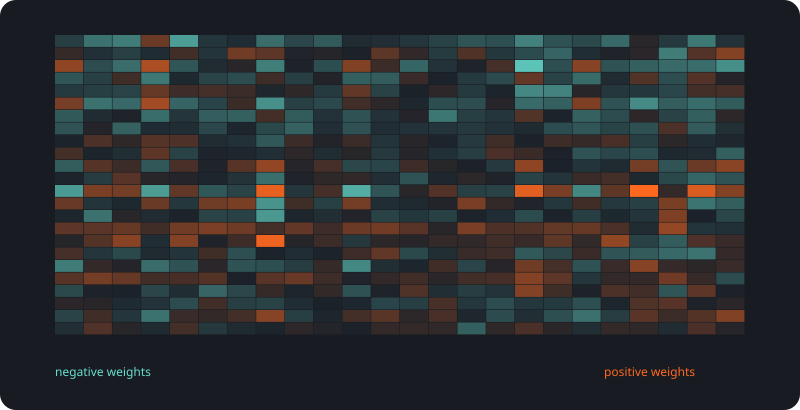
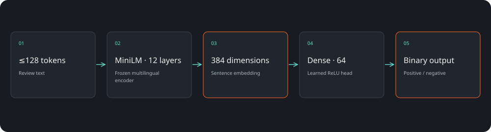
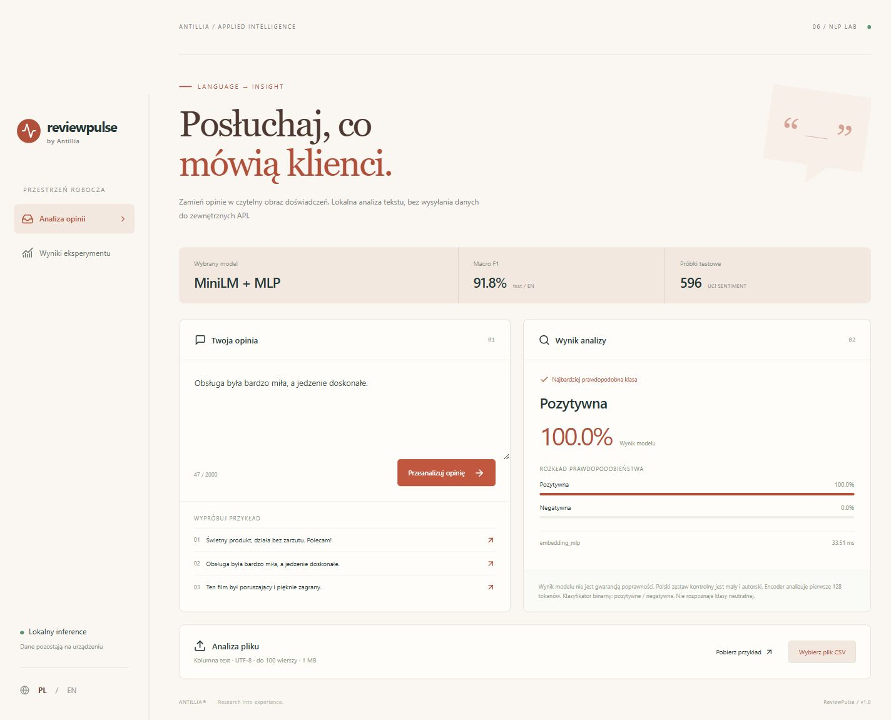

Dwie jawne klasy
Pozytywna lub negatywna opinia; bez udawanej klasy neutralnej.
Analiza opinii / CASE STUDY 06
Zbudowaliśmy analizator opinii, który rozpoznaje pozytywny i negatywny wydźwięk tekstu. Działa lokalnie, obsługuje pojedyncze komentarze i partie CSV, pokazuje także niepewność.
Macro F1 · test angielski
596 przykładów testowych

SAVED ARTIFACTS / REPRODUCIBLE RESULTSOcena liczbowa nie wyjaśnia doświadczenia. Tekst zawiera dodatkowy kontekst, ale jego ręczny przegląd jest czasochłonny.
Pozytywna lub negatywna opinia; bez udawanej klasy neutralnej.
Treść nie musi opuszczać urządzenia ani trafiać do zewnętrznego API.
Wyniki dla różnych źródeł i polskiej kontroli są pokazane osobno.
596 przykładów testowych
Macro F1 (%) ↑
Ta ilustracja została wygenerowana z wag lub reprezentacji używanych w projekcie. Ułatwia rozmowę o architekturze, ale sama nie wyjaśnia każdej decyzji modelu.
React · FastAPI · Sentence Transformers · scikit-learn„Obsługa była bardzo miła, a jedzenie doskonałe.” → pozytywny wydźwięk. Wynik modelu i alternatywa są widoczne obok tekstu.

Wstępne porządkowanie opinii przed przeglądem zespołu.
Prototyp podsumowania tonu komentarzy w konkretnym kanale.
Wykrywanie przypadków niepewnych i obszarów wymagających nowej anotacji.
Dane źródłowe zawierają wyraźnie pozytywne i negatywne zdania, bez neutralnych. Sarkazm, mieszane opinie i nowe domeny mogą pogarszać wynik. Polska kontrola obejmuje 16 autorskich przykładów.
UCI Sentiment Labelled Sentences · CC BY 4.0 ↗Projekt demonstracyjny zespołu Antillia. Scenariusze zastosowań opisują możliwości adaptacji; nie są deklaracją wdrożenia u klienta.
Pokaż nam problem. Dobierzemy zakres, dane i sposób sprawdzenia rozwiązania.
Omów swój projekt